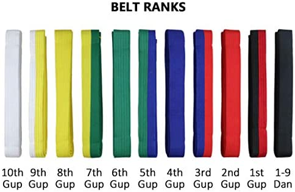

Cinturones
"Cinturon Blanco 10º Gup"
El cinturon blanco representa la inocencia y pureza del aprendiz/estudiante ya que no tiene conocimientos previos acerca del TaeKwon-Do
Las Formas(tuls) del cinturon blanco son 2:
"Cinturon Blanco Punta Amarilla 9º Gup"
La forma(tul) del cinturon blanco punta amarilla signfica"El Cielo y La Tierra", el cual consta de 19 movimientos y 19 ordenes
"Cinturon Amarillo 8º Gup"
El cinturon Amarillo representa la tierra de la cual brota la planta y toma raíz, como el cimiento del Taekwondo es colocado en el estudiante
Dan-Gun cuenta con 21 movimientos y se denomina así en honor al legendario rey santo Dangun
el cual era considerado como el fundador del reino de Gojoseon (el primer reino de Corea), en el año 2333 a.dc
"Cinturon Amarillo Punta Verde 7º Gup"
El tul de punta verde Do-san cuenta con 24 movimientos. Su denominación se debe al seudónimo del patriota Ahn Chang-ho (1876-1938)
quien dedicó su vida a la educación y a la causa de la independencia coreana del Reino de Japón
Los 24 movimientos representan su vida dedicada a la educación y la lucha por la independencia.
Es el seudónimo del patriota Ahn Chang-Ho (9 de noviembre de 1878 - 10 de marzo de 1938), fue un prócer coreano, pedagogo y activista a favor de la independencia coreana durante la Ocupación japonesa de ese país.
de los primeros líderes de la sociedad de inmigrantes coreanos-americanos en Estados Unidos. También se le conoce como su nombre de pluma Dosan (도산; 島 山 [tosʰan]).
Él estableció la Shinminhoe (Nueva Sociedad de Corea) cuando volvió a Corea de los EE.UU. en 1907. Fue la organización más importante para luchar contra la ocupación japonesa de Corea.
Fundó la Academia Joven Coreana en San Francisco en 1913 y fue un miembro clave en la fundación del Gobierno Provisional de la República de Corea en Shanghai en 1919. Ahn es uno de los dos hombres que se cree que han escrito La letra de la Aegukga, el himno nacional surcoreano.
Además de su trabajo para el Movimiento de la Independencia, Dosan quería reformar el carácter del pueblo coreano y todo el sistema social de Corea. La reforma educativa y la modernización de las escuelas fueron dos esfuerzos clave de Dosan.
"Cinturon Verde 6º Gup"
El cinturon verde simboliza el crecimiento de la planta, a medida que las habilidades en el Taekwondo comienzan a desarrollarse
El tul de cinturon verde es Won-Hyo el cual cuenta con 28 movimientos. Se denomina así, en honor al notable monje y filósofo Wonhyŏ Daisa
el cual era considerado como el precursor del budismo en la dinastía Silla, en el año 686 d.C.
"Cinturon Verde Punta Azul 5º Gup"
El tul de punta Azul Yul-Gok cuenta con 38 movimientos. Se denomina así por el término Yulgok
el cual era el seudónimo del filósofo y catedrático Yi I (1536-1584), quien era considerado como El Confucio de Corea
"Cinturon Azul 4º Gup"
El cinturon Azul simboliza el Cielo, hacia el cual va creciendo la planta hasta convertirse en un árbol maduro, a medida que los conocimientos en Taekwondo avanzan
el tul de cinturon azul es Joong-Gun el cual Cuenta con 32 movimientos. Se denomina así, como homenaje al patriota independentista An Jung-geun (Ahn Joong-Gun)
quien había asesinado al Gobernador japonés de Corea Ito Hirobumi, quien impulsó la anexión de Corea al Imperio Japonés
los 32 movimientos indican la edad en la que Joong-Gun fue ejecutado en la prisión de Lui-Shung en 1910
"Cinturon Azul Punta Roja 3º Gup"
El tul de punta Roja Toi-Gye cuenta con 37 movimientos. El nombre de este tul hace alusión a la palabra Toegyero, la cual era el seudónimo del reconocido filósofo y académico Yi Hwang (1501-1570)
quien impulsó la filosofía del neoconfucionismo. Los 37 movimientos hacen referencia a su lugar de nacimiento, ubicado en los 37 grados de latitud y el diagrama del tul representa a "la escuela"
"Cinturon Rojo 2º Gup"
El cinturon Rojo simboliza peligro alertando al estudiante para que ejerza control y advierta al oponente que se mantenga a distancia
el tul de cinturon rojo Hwa-rang cuenta con 29 movimientos. Su nombre hace alusión al grupo de élite de jóvenes guerreros Hwarang
quienes se entrenaban en las montañas y bosques del territorio de la Dinastía Silla, a principios del siglo VII
Sus 29 movimientos, hacen alusión a la 29ª división de infantería del Ejército Coreano, creada por el General Choi en la Isla de Cheju en 1954 y donde el Taekwondo alcanzó su punto de maduración
"Cinturon Rojo Punta Negra 1º Gup"
El tul de punta negra Choong-Moo cuenta con 30 movimientos. Su denominación hace alusión al título de Chungmugong (Señor Marcial Leal)
dado a título póstumo al almirante Yi Sun-sin, de la Dinastía Yi, quien forjó su reputación a partir de la invención del barco tortuga (Kobukson) en 1592
con el cual libró y ganó numerosas batallas al imperio japonés. La razón por la que este Tul termina con un ataque con mano izquierda
se debe a la simbolización de su trágica muerte, debido a la cual no pudo demostrar su gran potencial a su Rey.